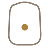

Nabhi Marma
The navel
How to
Lying down or seated, place your fingertips gently on your navel and press with light, steady pressure. You can also massage in slow clockwise circles around the area.
Benefits
- A traditional point associated with digestion
- Calming when paired with slow, deep belly breathing
- Gentle enough to use daily, even right after a meal with light pressure
Practice
Press or circle gently for 30-60 seconds, breathing slowly into the belly.

Get the Marma appFree, no ads, works offline
Google Play
General information, not medical advice. If you have a health condition or pain, talk to a doctor or qualified teacher first.